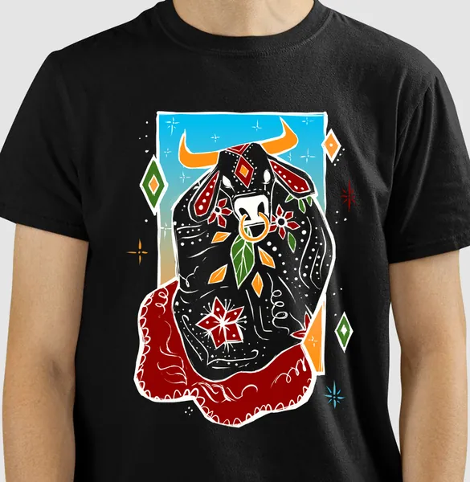
CamisetaFesta do Boi Colorido
R$ 106,90
R$ 103,70 à vista no Pix
ou até 6x de R$ 17,82 sem juros
Ver detalhesArte, poesia, música e tradição nordestina transformadas em camisetas com estampas nordestinas para vestir, presentear e levar com você por onde for.
Feito em Campina Grande, Paraíba — enviado para todo o Brasil.
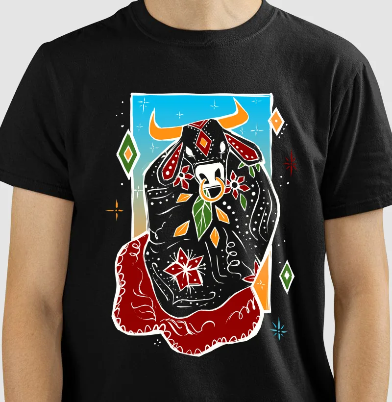
De Campina Grande, na Paraíba, o Ateliê Sertão Profundo cria roupas com temática nordestina que funcionam como uma passagem: quem veste atravessa para o lado de dentro do imaginário do Sertão — o das festas de junho, dos trios de forró, dos mandacarus floridos, dos santos, dos cantadores e das visagens que povoam as noites do interior.
Cada estampa nasce de uma memória, de um verso, de uma melodia ou de uma crença, e dialoga com a tradição gráfica nordestina — da xilogravura à estética armorial — traduzida em um design contemporâneo. O resultado são peças que guardam narrativas: personagens, símbolos, paisagens e sons de uma cultura viva, que segue se reinventando.
Vestir uma dessas histórias é um gesto de memória e pertencimento — para quem nasceu no Nordeste, para quem partiu e o carrega no peito, e para quem o ama de longe.
“Cada peça é uma história. Cada história é uma viagem. Quem veste se torna personagem desse universo.”
Cada coleção reúne estampas inspiradas no Nordeste que compartilham um mesmo universo — das fogueiras de junho aos mistérios do Sertão. Escolha por onde começar a viagem.
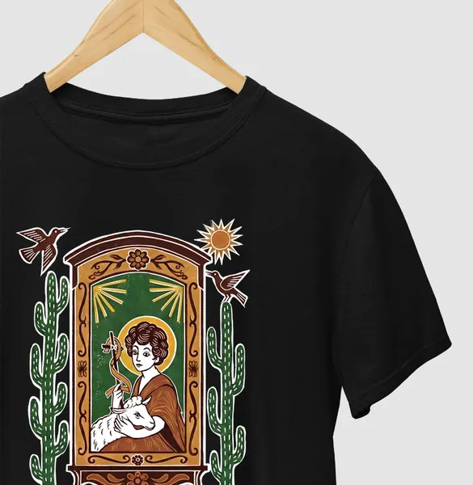
Santos juninos, fogueiras, bandeirolas e a fé que vira festa no meio do ano.
Ver coleção de São João →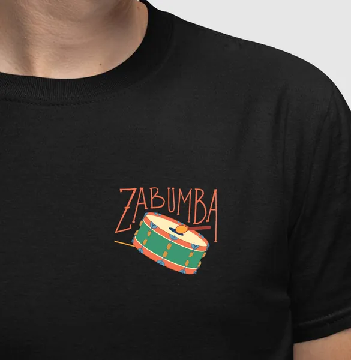
Zabumba, sanfona e triângulo: o forró e os sons que embalam o Sertão.
Ver coleção de música →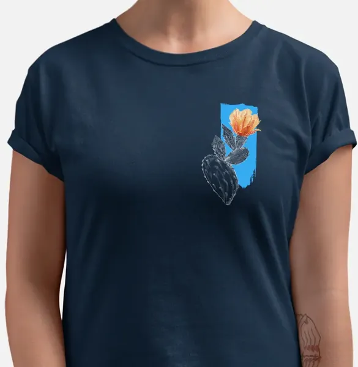
A flora que floresce na seca e os versos que brotam do chão rachado.
Ver coleção de cactos →
Visagens, crenças e mistérios que atravessam as noites do interior.
Ver coleção mística →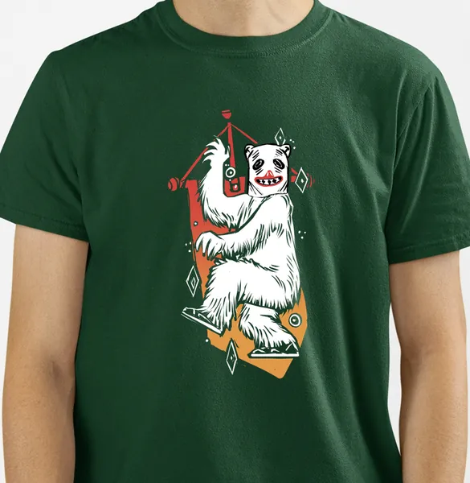
La Ursa, estandartes e a folia que toma as ruas do interior nordestino.
Ver coleção de carnaval →As mais vendidas da loja, na ordem em que o público escolheu: camisetas de algodão 30.1 penteado, com estampas autorais e tabelas de medidas nas versões masculina e feminina.

CamisetaR$ 106,90
R$ 103,70 à vista no Pix
ou até 6x de R$ 17,82 sem juros
Ver detalhes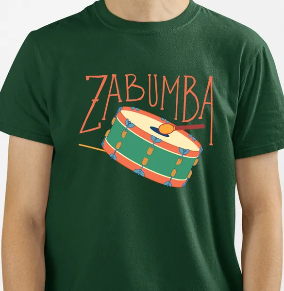
Camiseta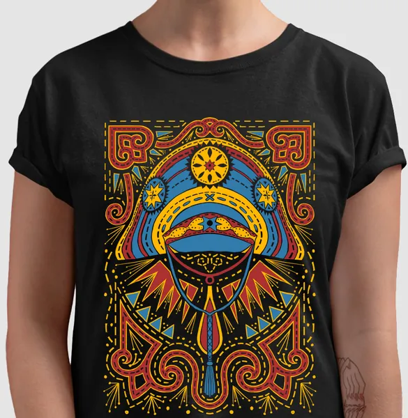
Camiseta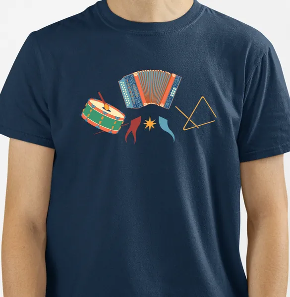
Camiseta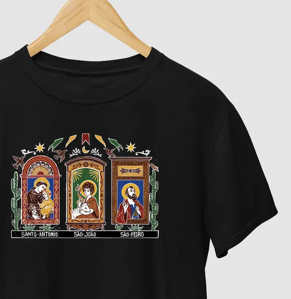
Camiseta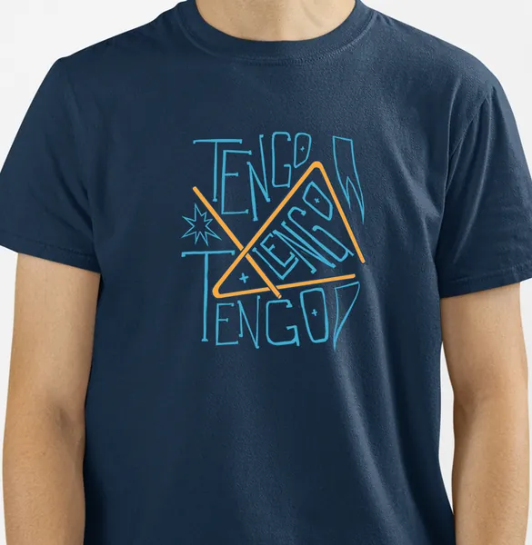
CamisetaR$ 106,90
R$ 103,70 à vista no Pix
ou até 6x de R$ 17,82 sem juros
Ver detalhes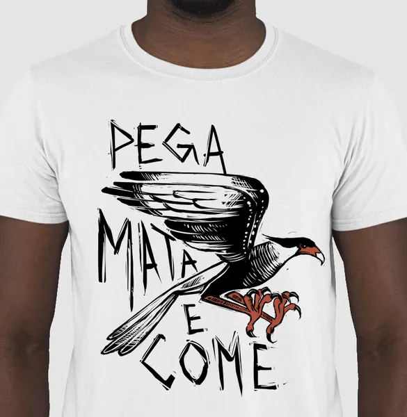
Camiseta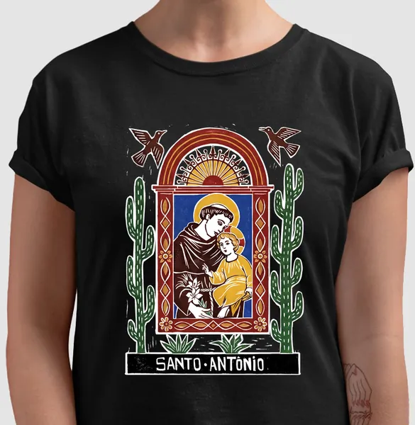
CamisetaPreços e condições verificados na loja oficial. Confira o valor vigente na página de cada produto.
Criações autorais que contam histórias do imaginário nordestino, com referências à xilogravura e à estética armorial.
Camisetas 100% algodão (a mescla cinza leva 12% de poliéster), com toque macio e caimento confortável.
Loja com conexão criptografada e verificação Google Safe Browsing para você comprar tranquilo.
Frete calculado pelo CEP no checkout e grátis em pedidos a partir de R$ 299,00.
Divida sua compra em até 6 vezes sem juros nos principais cartões de crédito.
Pagando à vista no Pix, o desconto é aplicado direto no valor da peça.
Não serviu? A primeira troca é gratuita, com solicitação em até 30 dias após o recebimento.
Dúvidas sobre tamanho, pedido ou troca? É só chamar no WhatsApp que a gente responde.
Toda estampa do ateliê percorre o mesmo caminho: começa como faísca no imaginário e termina vestida, ganhando o mundo.
Uma memória de infância, um verso de cordel, uma música de sanfona ou uma lenda contada na calçada acende a primeira ideia.
A ideia vira ilustração autoral, desenhada em diálogo com a xilogravura, a estética armorial e as cores do Sertão.
A arte é estampada sob demanda em camisetas de algodão 30.1 penteado, com produção em 2 a 5 dias úteis.
A peça chega até você em qualquer canto do Brasil — e quem veste passa a fazer parte da história que ela conta.
Para quem ama o Nordeste, colecionar discos de forró, ler cordel ou dançar até a sanfona pedir arrego: uma camiseta do Sertão Profundo é um presente nordestino criativo, que chega com narrativa, afeto e identidade — não apenas com tecido.
Tem opções para todos os tamanhos de personagem: camisetas adulto e infantil, bodies para os miudinhos, moletons e regatas.
Encontrar um presenteÉ uma loja de vestuário autoral sediada em Campina Grande, na Paraíba. Criamos camisetas e outras peças com estampas inspiradas na cultura, na arte, na música e no imaginário nordestino, com envio para todo o Brasil.
Diretamente na loja oficial do Ateliê Sertão Profundo. Todo o catálogo fica disponível online, com pagamento seguro e entrega em qualquer região do Brasil.
Além das camisetas tradicionais, a loja oferece camisetas oversized, camisetas de algodão peruano, camisetas infantis, bodies infantis, regatas, croppeds, moletons, croppeds de moletom, hoodies e suéteres de moletom.
Sim. O frete é calculado no checkout de acordo com o CEP, a quantidade de peças e o valor do pedido, e é grátis em compras a partir de R$ 299,00. As peças são produzidas sob demanda em 2 a 5 dias úteis, e o prazo informado na compra já inclui produção e entrega.
Aceitamos Pix com 3% de desconto, cartões de crédito (Visa, Mastercard, Elo, American Express e Diners Club) com parcelamento em até 6x sem juros, e boleto bancário, cuja compensação pode levar até 3 dias.
Cada página de produto traz tabelas de medidas das versões masculina e feminina. Compare as medidas com uma peça que você já usa e, em caso de dúvida, fale com a gente pelo WhatsApp antes de finalizar a compra.
A primeira troca é sem custo. Você pode solicitar a troca em até 30 dias após o recebimento — ou em até 90 dias em caso de defeito. Para devolução com reembolso, o prazo é de até 7 dias corridos a partir do recebimento. Tudo é feito pela área de pedidos do site, acessando com o e-mail usado na compra.
O acompanhamento fica disponível no e-mail de confirmação da compra e também na aba Meus Pedidos do site, acessando com o e-mail utilizado no pedido.
O atendimento é feito pelo WhatsApp (83) 98813-4176, por e-mail e pelas redes sociais da marca, como o Instagram @sertaoprofundo.
Sim. As estampas são criações autorais do ateliê, inspiradas nas festas, nas crenças, na música e nas paisagens do Nordeste, com referências à xilogravura e à estética armorial.
Descubra peças que transformam arte, memória e tradição em uma forma única de expressão.
Explorar todas as peças